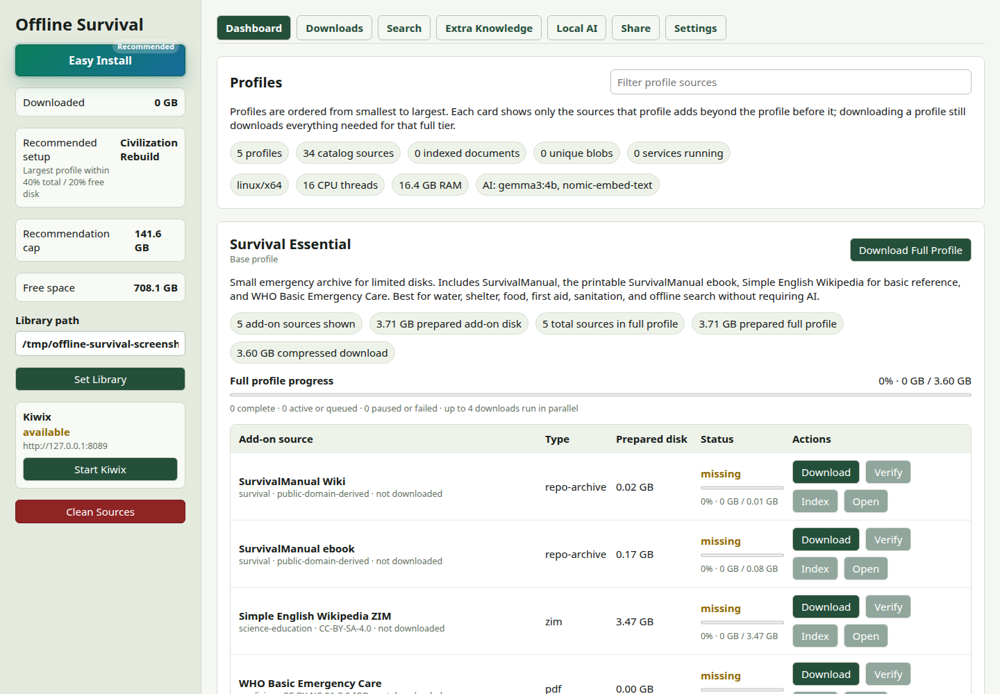
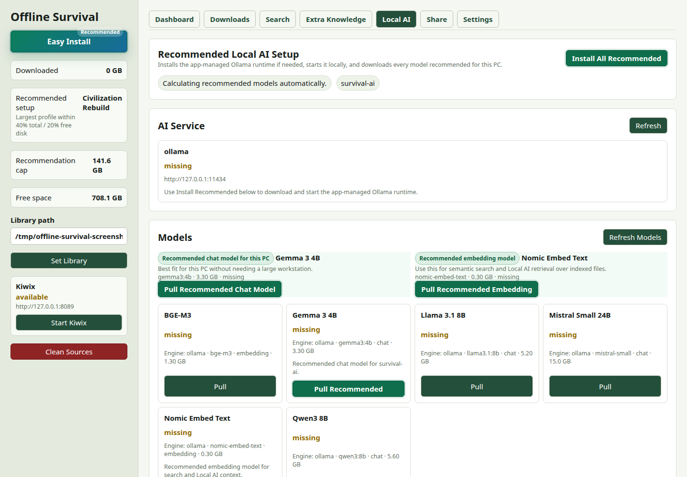
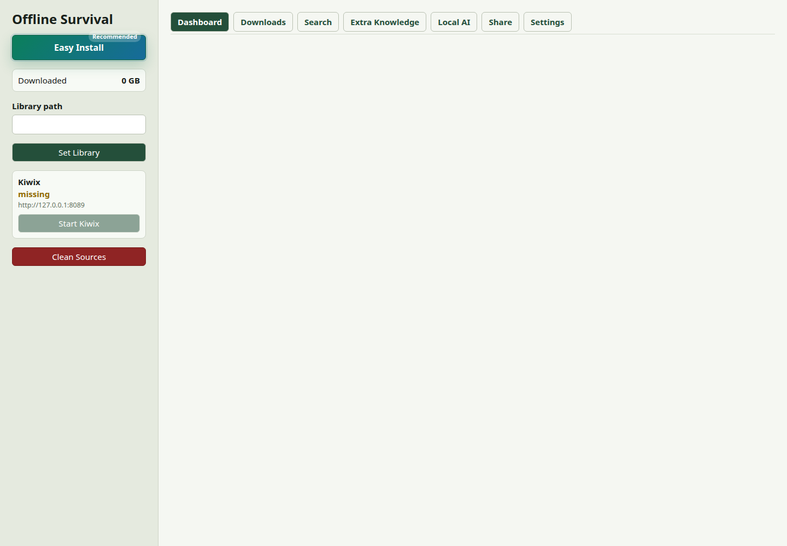

Choose a library folder
This is where the app stores downloaded sources, prepared copies, indexes, and local AI models.
Private offline knowledge library
Offline Survival downloads trusted public knowledge packs, indexes them for search, and can package the result for another computer. It is a practical library builder, not a cloud service.

How it works
This is where the app stores downloaded sources, prepared copies, indexes, and local AI models.
Start small with Survival Essential or build a larger civilization recovery archive for big disks.
The app prepares and indexes downloaded files so you can find answers without a network.
Create a portable package with the selected downloaded sources and app launch files.
Local AI with brakes
Local AI can use Ollama and recommended models, but the app checks available RAM before starting the selected chat model. If the machine is under pressure, Local AI stays blocked and normal search still works.


Offline handoff
Share packages are built from sources already present on disk. Releases also include a combined all-platforms archive, so mixed operating system environments can be prepared from one release set.
What can go inside
Get it
Choose the file for your operating system. The app downloads knowledge sources only after you choose what to install.